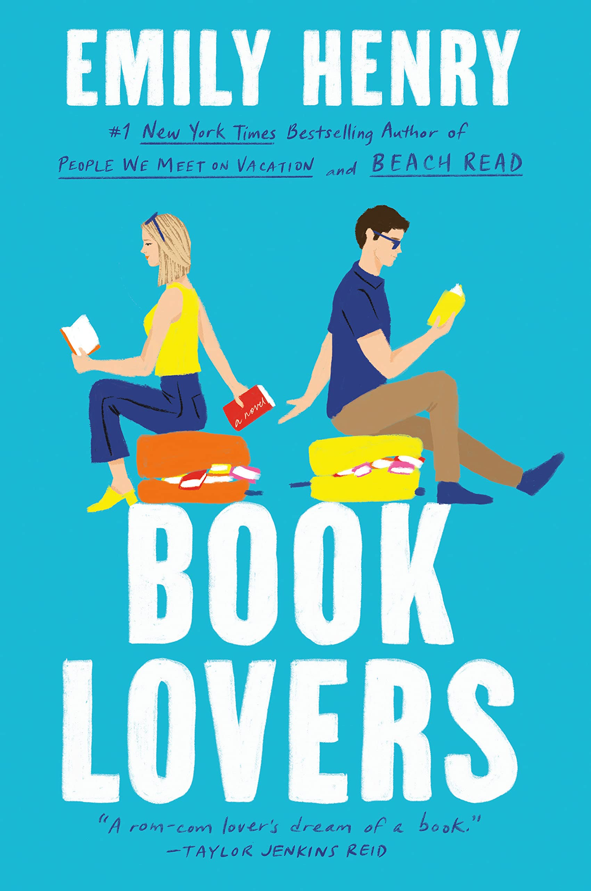

Reading Now
'Book Lovers' by Emily Henry
Book Description
Nora Stephens' life is books—she's read them all—and she is not that type of heroine. Not the plucky one, not the laidback dream girl, and especially not the sweetheart. In fact, the only people Nora is a heroine for are her clients, for whom she lands enormous deals as a cutthroat literary agent, and her beloved little sister Libby.
Which is why she agrees to go to Sunshine Falls, North Carolina for the month of August when Libby begs her for a sisters' trip away—with visions of a small-town transformation for Nora, who she's convinced needs to become the heroine in her own story. But instead of picnics in meadows, or run-ins with a handsome country doctor or bulging-forearmed bartender, Nora keeps bumping into Charlie Lastra, a bookish brooding editor from back in the city. It would be a meet-cute if not for the fact that they've met many times and it's never been cute.
If Nora knows she's not an ideal heroine, Charlie knows he's nobody's hero, but as they are thrown together again and again—in a series of coincidences no editor worth their salt would allow—what they discover might just unravel the carefully crafted stories they've written about themselves
-Emily Henry, back of book summary
Current Thoughts
I am less than fifty pages into this book, so there is not much I can give an update on except that I like the main character more than this authors previous main characters. Her main characters in "People We Meet on Vacation" and "Beach Read" were a lot less put together and harder to relate to, but this female lead feels more realistic. However, I am only fifty pages in so this feeling could drastically change as I continue reading.